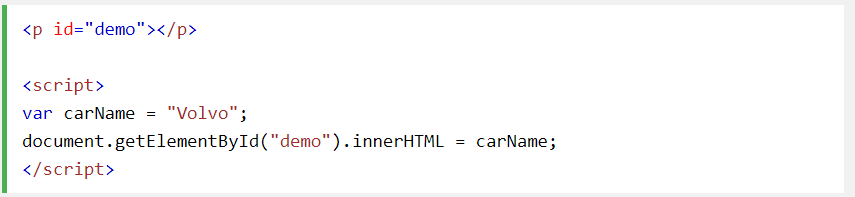

JavaScript değişkenleri, veri değerlerini saklamak için kullanılan kaplardır.
Bu örnekte, x, y, ve z, değişkenler şunlardır:
var x = 5; //x 5 değerini saklar
var y = 6; //y 6 değerini saklar
var z = x + y;//z 11 değerini saklarBu örnekte, price1, price2, ve total, değişkenler şunlardır:
var price1 = 5;
var price2 = 6;
var total = price1 + price2;Tüm JavaScript değişkenleri olmalıdır tespit ile benzersiz adlar .
Bu benzersiz adlara tanımlayıcı denir .
Tanımlayıcılar kısa adlar (x ve y gibi) veya daha fazla açıklayıcı ad (yaş, toplam, toplam Hacim) olabilir.
Değişkenler için adlar oluşturmak için genel kurallar (benzersiz tanımlayıcılar):
JavaScript'te, eşittir işareti ( =) bir "atama" operatörüdür, "eşittir" operatörü değildir. Bu cebirden farklıdır.
JavaScript'te bir değişken oluşturmaya "değişken" bildirme denir. varAnahtar kelimeyle bir JavaScript değişkeni bildirirsiniz:
Bildirimden sonra, değişkenin değeri yoktur (teknik olarak değeri vardır undefined). To atamak değişkene bir değer, eşit işareti kullanın:
Değişkeni bildirirken ayrıca bir değer atayabilirsiniz:
Aşağıdaki örnekte, adlı bir değişken oluşturup buna carName"Volvo" değerini atarız. Sonra id = "demo" ile bir HTML paragrafının içindeki değeri "çıktılar":
